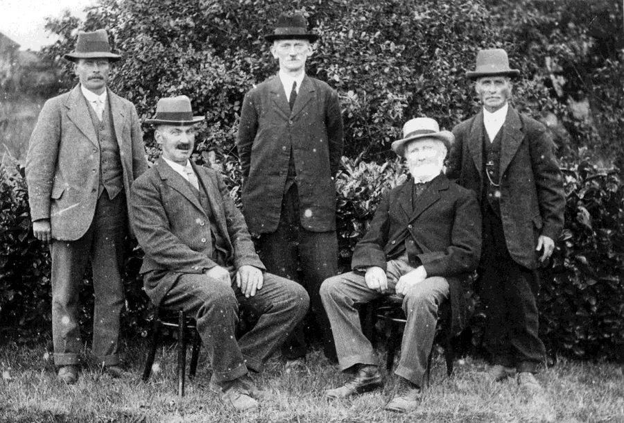
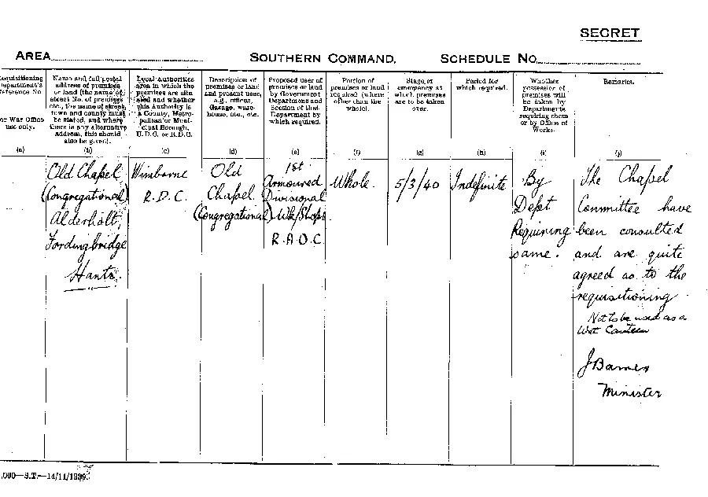
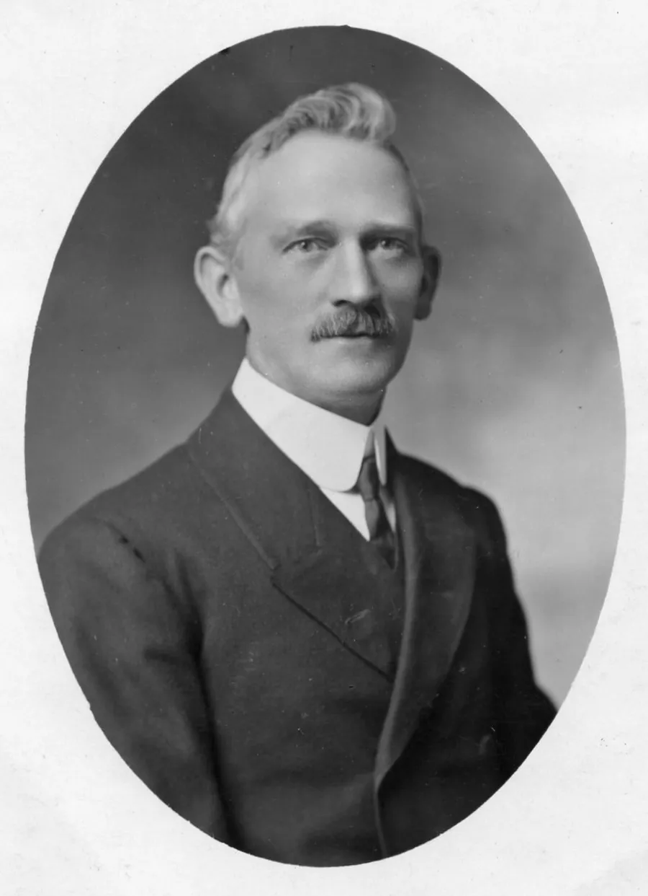
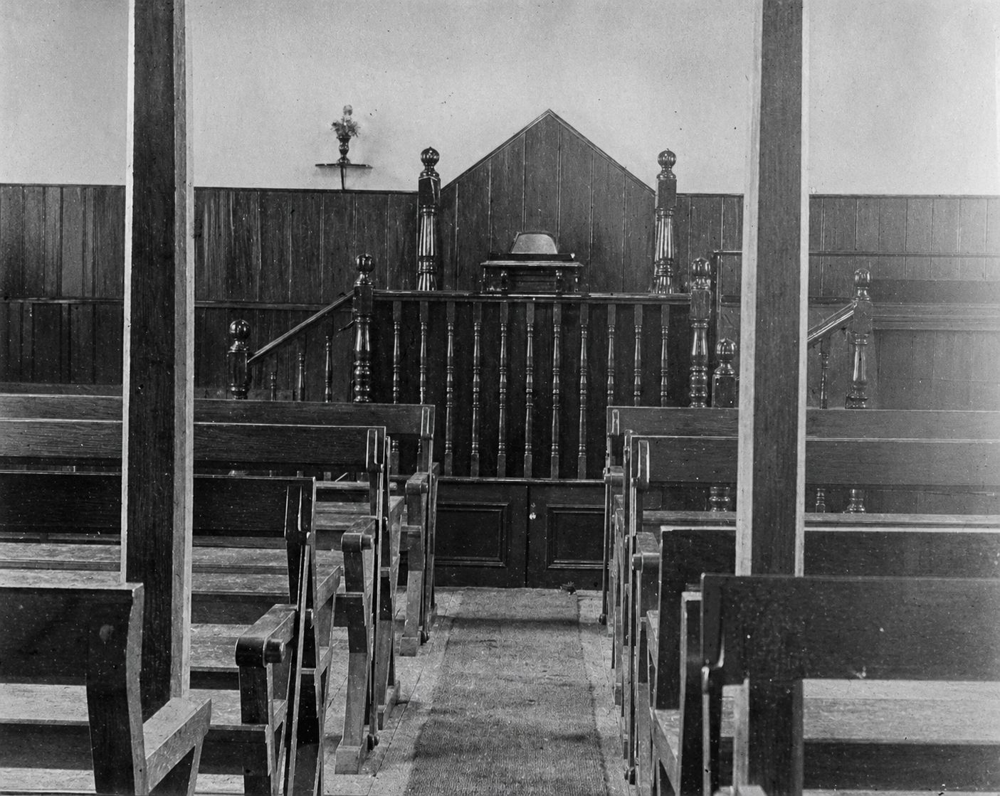
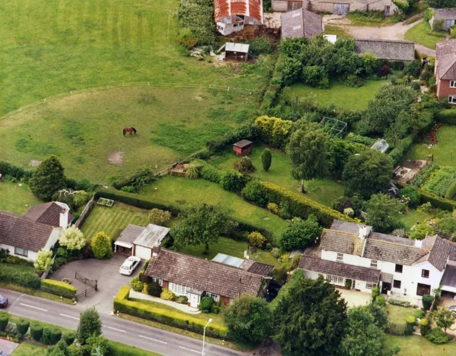
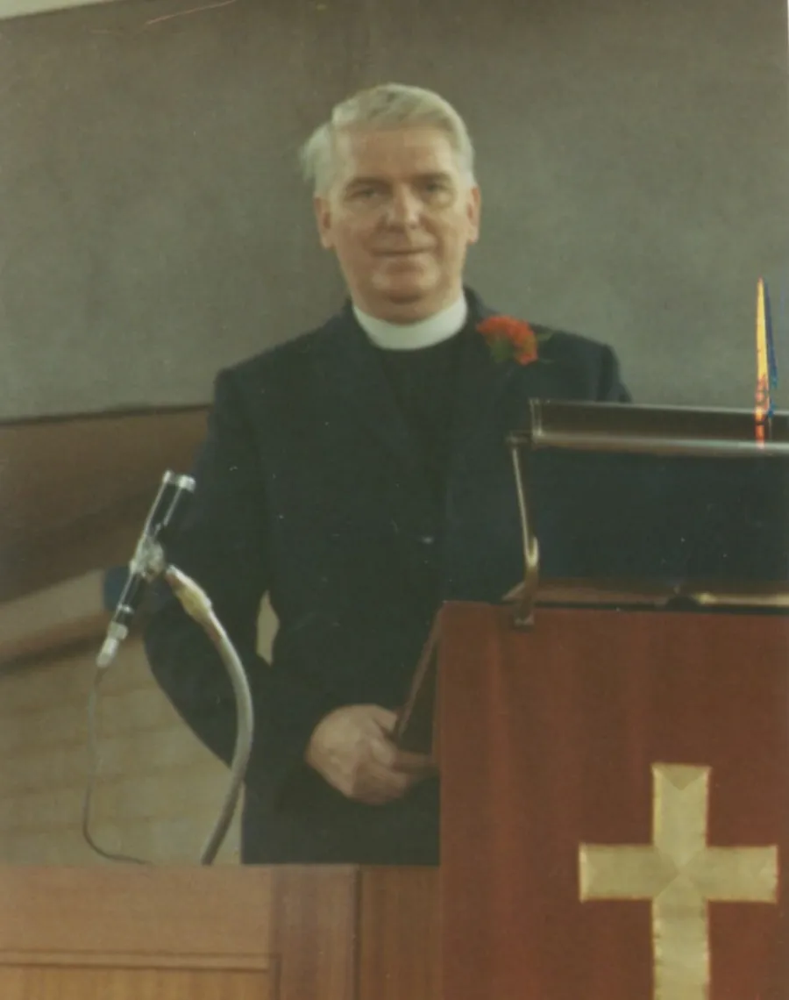
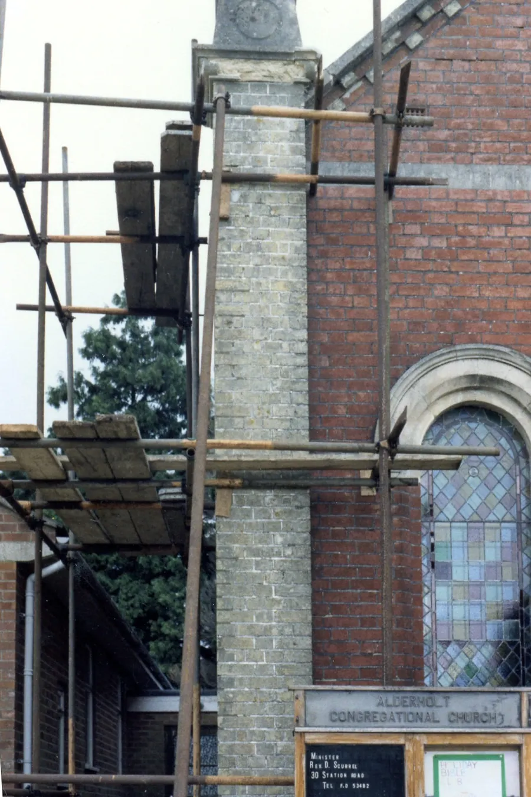
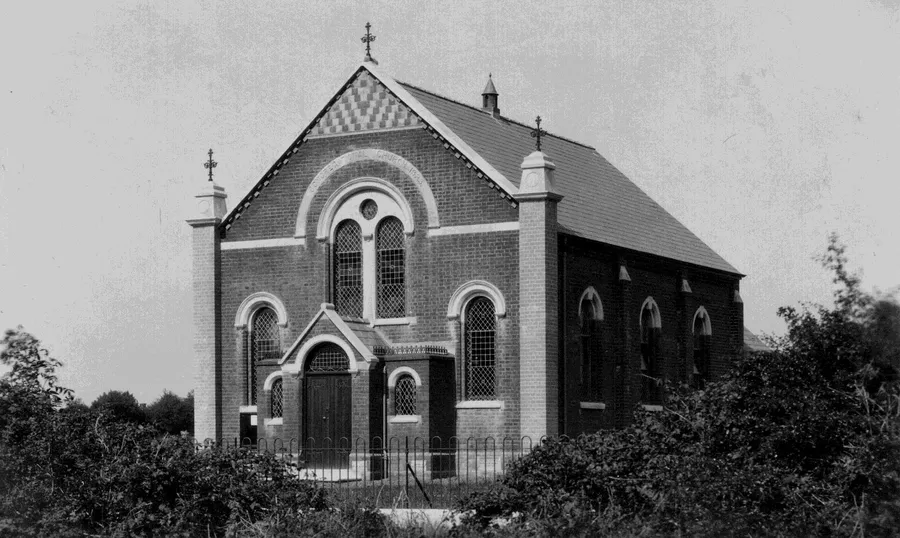

Alderholt Chapel Centenary — Part II
by Adrian King

When the new chapel building was opened in 1924 a dilemma occurred. Should new hymnbooks be bought or should the Church continue with Sacred Songs and Solos. The latter prevailed because “They were more popular with the people as well as being full of Gospel truth.”
It was not until 1939 that the church eventually moved to the Congregational Hymnary when they purchased 12 large print and 60 small print copies for Sunday morning service use. They also bought 24 large print Sankey’s for use at the evening services to replace those that had deteriorated.
Then the church moved to Hymns of Faith and eventually Mission Praise. But since 2012 the hymns have been projected.

On 14th March 1924 the eight trustees of the Old Chapel (William Target Chubb had died) resigned and the trust was then administered and managed by the Hampshire Congregational Union (Incorporated).
The Church gave notice to the Registrar General of Births, Deaths and Marriages that the Old Chapel had wholly ceased to be used as a place for public worship in August 1924, but it continued to be used for other activities. In 1931 an Alexander Harmonium was moved there for the use of the Sunday School.
During the Second World War the Chapel was requisitioned by Southern Command 1st Armoured Divisional Workshops (R.A.O.C.) for use as a store. The requisition document dated 5th March 1940 is still in existence.

The requisition of the chapel cannot have caused much upheaval or was only for a short period. Norman Edsall who was five at the time does not remember having to meet in the New Chapel for Sunday School in those days.
Through the 1930s and 1940s maintenance of the Old Chapel was a financial burden. The fence was renewed in 1927 and again in 1949 where Mr. York charged £9 for the repair. Roof slates and woodwork needed replacing in 1927. Guttering was repaired in 1936.
In 1941–42 part of the ceiling fell down and Mr. Arney from Fordingbridge needed scaffolding to repair it. The coal-shed roof was leaking causing damage to the coal and copper in 1949. In this same year the stovepipe was re-installed. In 1950 windows needed repairing. With all this work the Church had a deficit of £11 9s. 7d. in 1950.

In 1952 there was a dispute with the adjacent property as to who was responsible for overhanging branches.
In September of that year the stove was in need of immediate repair. Enquiries were made and it was found that the cost to repair the stove was only slightly less than the cost of a new stove. So it was decided that Mr. Wort should be contacted and a new stove of the same size would be purchased and fitted.
It is not known if the stove was replaced because in the Church meeting of 11th December 1952 it was brought up that it might be possible to sell the Old Chapel. Of course there would be implications as it would be necessary to contact the solicitors of the Charity Commission for permission to sell the property. The members thought that the building ought to be sold in good condition and Mr. Wayman who was a builder estimated that it would cost between £40 and £50 to put the building in sound condition.

It took a long time to sort things out — 6 years in fact.
A members meeting on 26th November 1953 agreed that the decision to sell should be announced on four Sundays in December to give all friends and members who were interested an opportunity to voice their opinions.
When the Church met on 11th January 1954 older members strongly felt that there could possibly be a clause in the deeds held by the Congregational Union that the building might still have some connection with the Fordingbridge Church. If this were so would the Fordingbridge Church have the right to claim the building?
It was proposed that a delegation consisting of Mr. H. Pressey and Mr. E. Wallis should make an appointment with the Rev. Knight who was the minister of Longham Congregational Church and seek his advice.

At the next meeting on 25th February, Mr. Pressey reported that the Rev. Knight had been contacted and the details of the selling of the Old Chapel had been resolved. The Fordingbridge Committee had met the Church representatives. Following a decision made at a recent Church meeting, a letter was sent which gave the Church every assurance that the building belonged to the Alderholt Church. They could dispose of it as they wished.
There had been an offer of £50 for the building and a member, Mrs. Deacon, said that she knew of others who would be interested enough to pay £250 if an adjoining piece of land was made available to make the plot square.
Mrs. Deacon informed the members on the 17th March 1953 that she had purchased the strip adjoining the Old chapel. The chairman of the meeting asked her if she would be prepared to sell the piece of land to the church as this would be of great benefit when selling the Old Chapel. It was not until 4th October that Mrs. Deacon told the Church of her intentions. She had written a letter which she intended sending through to the County Secretary with a proposed offer for the Old Chapel. The offer was £125 for the Old Chapel and the ground on which it stood or £150 if this was unacceptable.
Mr. Pressey suggested that the church should consult a valuer or some person whose valuation would be entirely independent. Mr. Frith who was the County Secretary was invited to meet Mr. Alcock at the site to enquire of his advice on the matter.

By 17th November 1955 it was known that Mr. Frith had handed a letter on to the solicitors of the Congregational Union and had received a reply. The letter said that the procedure the church had to follow was that the Charity Commissioners required that a local agent should be engaged to value the property. Hayward and Coundly had been contacted and they had valued the Chapel with furnishings and land on which it stood at £160.
A letter dated 18th April 1956 from Blake, Lapthorne, Roberts and Lea stated that they had received formal notice of sale from the Charity Commissioners and enclosed three notices that were to be displayed in the Congregational Chapels at Alderholt and Fordingbridge, and on a public notice board in the village for a period of fifteen days.
The next time we hear about the Old Chapel is on the 10th January 1957 when Mr. Wallis enquires as to how the sale is going. He was informed that due to unforeseen circumstances and delay with the Charity Commissioners the Church had not been able to make the sale as soon as had been hoped for. However everything was being done to bring the matter to a satisfactory ending.
The Charity Commission eventually gave permission for the sale of the Old Chapel on the 30th August 1957 for £150 provided the sale was completed within one year. This had so far taken four years, but was not quite finished.

Pastors
| Rev. John Baines | 1910–1950 |
| Rev. E. T. C. Wheeler | 1950–1954 |
| Rev. Leslie Alcock | 1955–1957 |
| Rev. Derek Anderson | 1960–1964 |
| Rev. Philip Williams | 1966–1967 |
| Rev. Philip Williams | 1967–1973 |
| Pastor Martin Price | 1975–1983 |
| Rev. Dennis Scurrell | 1984–1996 |
| Rev. Bruce Jenkins/td> | 1998–2000 |
| Rev. Dr. Chris Sinkinson | 2001–2012 |
| Mr. Chris Bishop | 2011–2019 |
| Mr. Jonathan Paterson | 2012–2017 |
| Mr. Ross Wilkinson | 2022– |

Trustees
| William Bailey | Alderholt |
| William Target Chubb | Fordingbridge |
| Henry Edsall | Fordingbridge |
| Thomas George Hawkins | Fordingbridge |
| Frederick Walter Haydon | Fordingbridge |
| Francis Henbest | Fordingbridge |
| John Keay | Fordingbridge |
| George Locke | Fordingbridge |
| Henry Nicklen | Alderholt |
| Alfred Nuth | Fordingbridge |
| Joseph Sims | Fordingbridge |
| Harry Frederick Withers | Fordingbridge |
| Isaac Witt | Gorley |
| William Blackmore | Fordingbridge |
| William Elliot Barnes | Fordingbridge |
| William Target Chubb | Fordingbridge |
| William Henry Fanner | Fordingbridge |
| Edward Nicklen | Alderholt |
| Urban Thorne | Alderholt |
| Leonard Barnes Withers | Fordingbridge |
| James Woodvine | Alderholt |
| James Wort | Stuckton |
| Job Brewer | Verwood |
| Alexander Hayter | Alderholt |
| Benjamin Hayter | Alderholt |
| James Henry Hoddinott | Alderholt |
| Ernest Lucan Lane | Bournemouth |
| Frederick Thomas | Alderholt |
| Urban Thorne | Sandleheath |
| Charles Robert Winter | Winton |
| James Woodvine | Alderholt |
| John Woodvine | Alderholt |
| Harvey Wright | Alderholt |